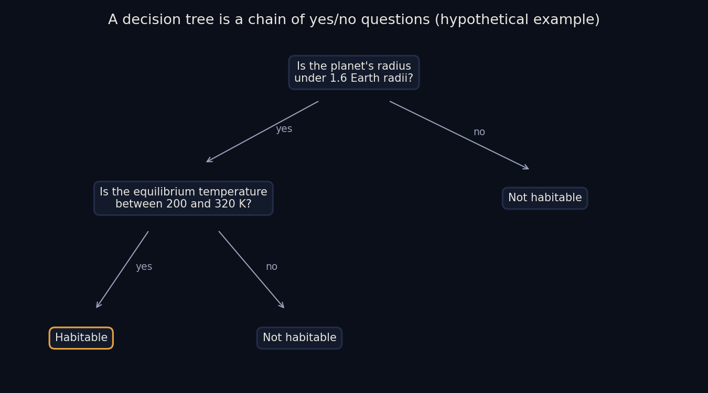
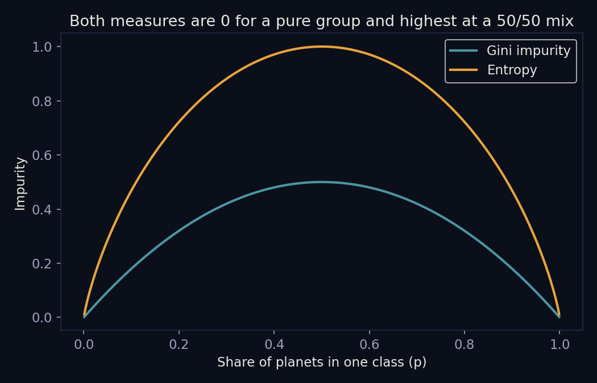
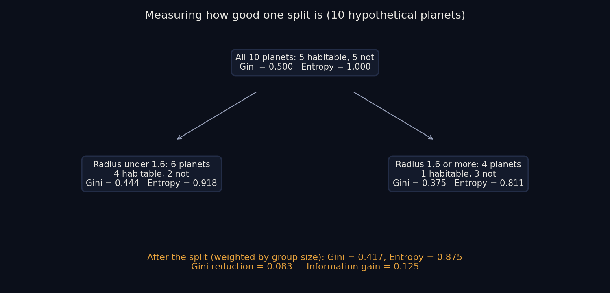
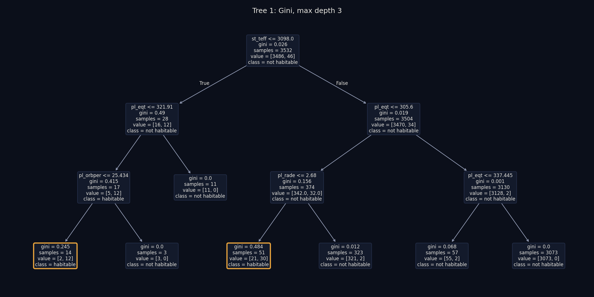
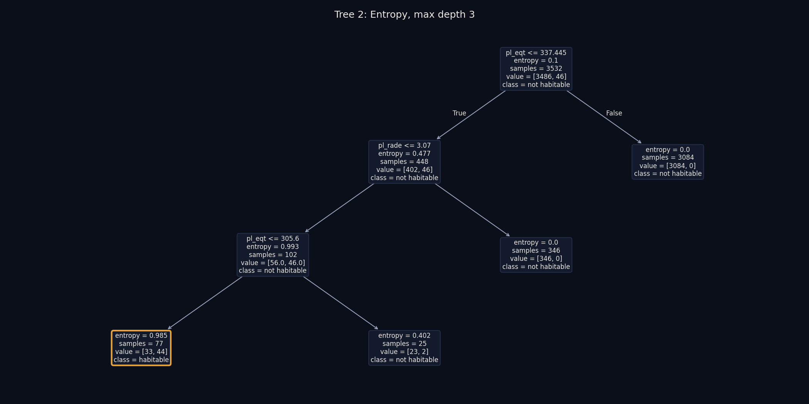
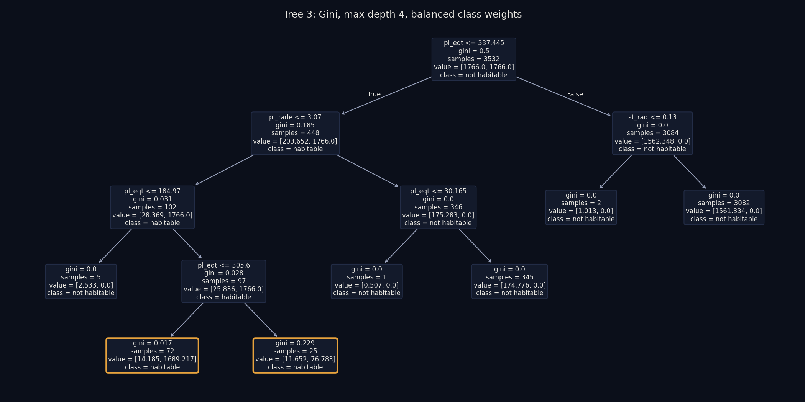
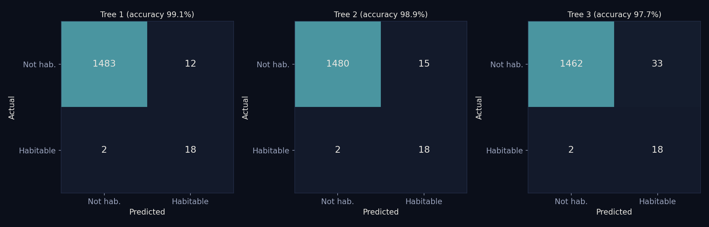
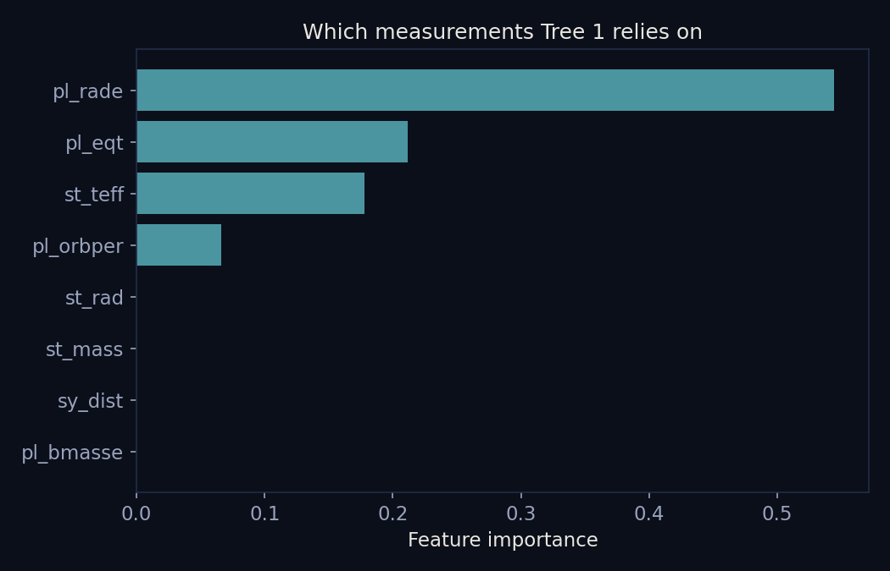

Decision Trees
Decision Trees
Overview
A decision tree is a supervised method that classifies by asking a chain of yes/no questions about the measurements. Each question splits the planets into two groups, and the questions continue until the groups are mostly a single class. Read from top to bottom, a tree is a set of plain rules, which makes it one of the easiest models to explain. Trees are used to classify, to predict numbers, and to show which measurements matter most, since every split names the measurement it used.

To choose a question, a tree tries many possible splits, each a measurement plus a cutoff value, and keeps the one that leaves the purest groups. Purity is measured in two common ways. Gini impurity is 1 minus the sum of the squared class shares, so it is 0 for a group of a single class and 0.5 at most for two classes. Entropy is the negative sum of each class share times the base 2 logarithm of that share, so it is 0 for a pure group and 1 at most for two classes. Both reward splits that make groups more one-sided and usually pick similar questions. Information gain is the impurity of the group before a split minus the weighted average impurity of the two groups after it, with each group weighted by its size, and the split with the largest gain is chosen. When Gini is used in place of entropy, the same subtraction is often called the Gini reduction.

A small example shows the arithmetic. Take 10 hypothetical planets, 5 habitable and 5 not, which gives a Gini of 0.500 and an entropy of 1.000. Splitting on whether the radius is under 1.6 Earth radii sends 6 planets left (4 habitable, 2 not) and 4 planets right (1 habitable, 3 not). The left group has a Gini of 1 - (4/6)2 - (2/6)2 = 0.444 and an entropy of 0.918. The right group has a Gini of 0.375 and an entropy of 0.811. Weighting by group size (6/10 and 4/10) gives a Gini of 0.417 and an entropy of 0.875 after the split. The Gini reduction is 0.500 - 0.417 = 0.083 and the information gain is 1.000 - 0.875 = 0.125. Both are positive, so the split made the groups purer, and a tree would compare this gain against every other candidate split before committing to one.

It is generally possible to build an infinite number of trees from the same data. A cutoff on a continuous measurement such as radius can be any number between two neighboring planets, and every one of those numbers separates the planets in the same way while still counting as a different tree. Beyond that, the choice of which measurement to split on first, the order of the questions, whether a measurement is reused lower down, how deep the tree grows, and when it stops can all be changed, and many different combinations fit the same data about equally well. In practice a tree is pinned down by a rule for choosing splits, a depth limit, and a stopping rule, and changing any of them gives a different tree, as the three trees below show.
Data Prep
Decision trees use the same labeled data and the same training and testing split as Naive Bayes: 5,047 labeled planets, of which 66 are labeled habitable by the Habitable Worlds Catalog, split into 3,532 training planets (46 habitable) and 1,515 testing planets (20 habitable). Supervised methods need labels so the model has correct answers to learn from, and the training and testing sets must be disjoint so that the score reflects planets the tree never saw. The code confirmed that no planet appears in both. Trees only compare a measurement to a cutoff, so no log transform or rescaling is needed, and the raw measurements were used as they are.


Data files: labeled_sample.csv, train_set.csv, and test_set.csv.
Code
Data split: prep_train_test.py. Decision trees: decision_trees.py. Both are written in Python and use pandas, scikit-learn, and matplotlib.
Results
Three different trees were grown, and each was scored on the 1,515 testing planets, where always guessing not habitable would score 98.7%. Tree 1 uses the Gini rule with a depth limit of 3. It reached 99.1% accuracy, found 18 of the 20 habitable planets, and wrongly flagged 12 others, so 60% of the planets it flagged are habitable. Its first question is about the host star's temperature, with a cutoff of 3,098 K that singles out very cool stars, followed by questions about the planet's equilibrium temperature, radius, and orbital period. Tree 2 swaps in the entropy rule and keeps the depth limit of 3. It reached 98.9%, again found 18 of 20, and raised 15 false alarms. It opens with the planet's equilibrium temperature, with a cutoff near 337 K, and then asks about radius, with a cutoff near 3.1 Earth radii. Tree 3 goes back to Gini, allows a depth of 4, and gives the rare habitable class extra weight while growing. It reached 97.7%, which is below the always-no baseline, and it found the same number of habitable planets, 18 of 20, but raised 33 false alarms. Because non-habitable planets vastly outnumber habitable ones, every extra false alarm costs accuracy, which is why the tree with the most false alarms has the lowest score.





Conclusions
The trees point to a simple profile for a planet the catalog lists as habitable. In the labeled data, those planets have radii between 0.8 and 3.0 Earth radii and a median equilibrium temperature of 266 K, and the trees keep returning to the same few measurements to find them: a moderate equilibrium temperature, a small to medium size, and in Tree 1 a very cool host star. Tree 3 relies on equilibrium temperature for about 82% of its importance and radius for the remaining 18%. This is a much better balance than Naive Bayes reached, since all three trees found 18 of the 20 habitable planets in the testing set while raising between 12 and 33 false alarms, against 253 for Naive Bayes with equal priors. The result also supports the earlier clustering finding: there is no sharp wall around habitable planets, but there is a recognizable region of measurement space where most of them sit. Two cautions apply. The catalog's habitable criteria are built from quantities closely related to these same measurements, so the trees are partly rediscovering the catalog's own rules. And with only 20 habitable planets in the testing set, each planet is worth five points of recall, and the trees used simple depth limits and were not tuned, so the exact numbers should be read as rough.